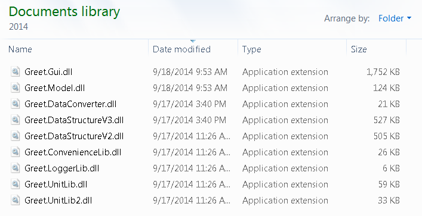
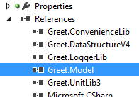
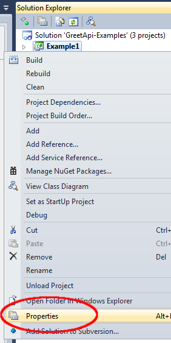
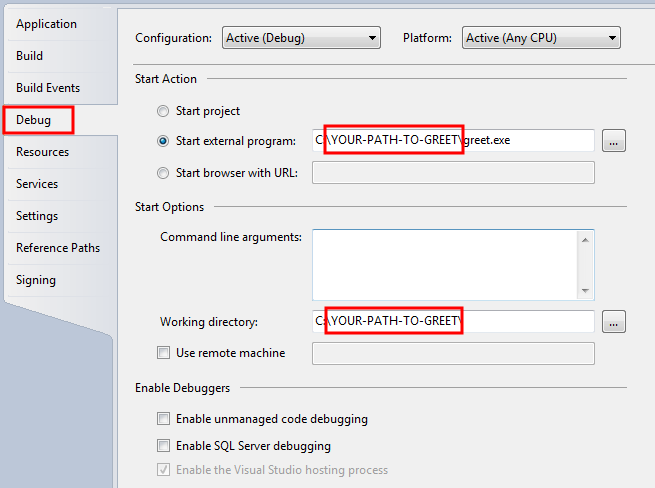
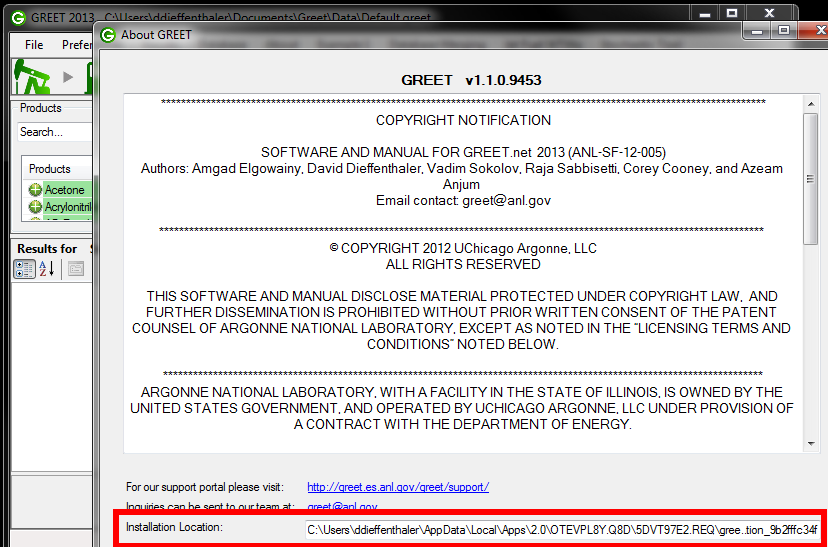
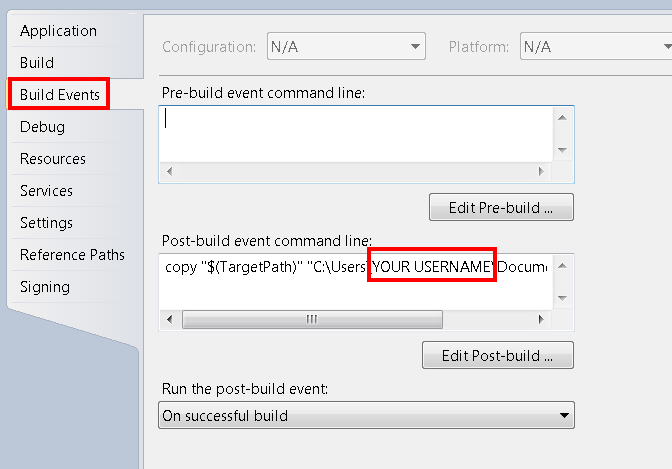
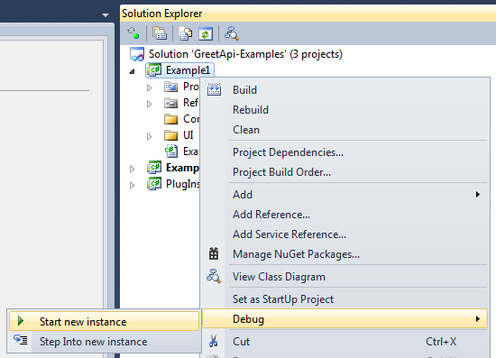
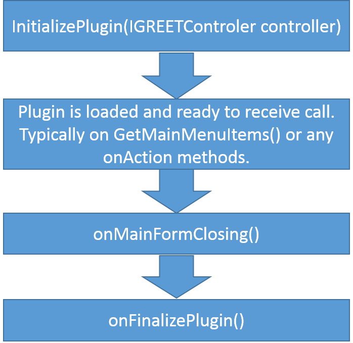

GREET API for plugin developers
GREET is now capable of loading plugin in order to extend functionalities. We are at the early stages of developing this API so we do appreciate any comments that may help us improving.
The plugin page shows examples of plugin that have been developed using the interface.
Documentation about the available methods and classes is available as HTML
The project containing the interfaces and some examples is available from GitHub
You can communicate with the GREET development team online on our irc webchat
Warning 2014:
The API has changed between GREET 2013 and GREET 2014, we are now providing more features and flexibilities but some of your code will need some refractoring in order to be used with GREET 2014.For a list of updates and modifications please see the API 2014 changes page.
Minor 2015 changes:
The API has not drastically changed between 2014 and 2015, mostly functions have been added such as the DataHelper class which allows the user to create new processes, pathways... from the code easily.Please have a look at the code of the Example4 which is well documented and that uses the DataHelper class.
Getting started
In order to familiarize yourself with the available methods and objects we created examples available from the archive. Example1 lists all pathways and allows you to observe the total GHGs for a selected pathway. Example2 allows the user to find a parameter and change the user value by the model, then allows to run another simulation.
Examples source code can be downloaded and tested by following these instructions:
-
1) Download and install GREET 2015 from our main page.
2) After installation check that your My Documents folder contains the GREET DLLs, look into My Documents\Greet\Plugins\API\2015

3) Check the references in the different projects, you must configure the references so they point to Greet.DataStructureV4, Greet.Model and Greet.UnitLib3 if you wish to use the current unit system

4) We need to configure Visual Studio so that it runs GREET and automatically load the plug-ins in debug mode. This allows you to debug your work using the Visual Studio IDE.
In order to do so we'll need to configure the Debug and Post-Build actions for all projects under the solution.
First right click the Example1 project and select "Properties"

5) In the properties pane, select the "Debug" tab

In the debug tab check "Start External Program" and point it to the greet executable: greet.exe. GREET is installed in a sub-folder of your personal folder, but the easiest way to find the exact location is by running GREET, then click the "About" menu, then "About..." A new window will pop up, the installation location can be seen at the bottom.

6) In the properties pane, select now the "Build Events" tab

In the "Post-build event command line" set visual studio to copy the output to your My Document folder.
copy "$(TargetPath)" "C:\Users\MY USERNAME\Documents\Greet\Plugins"
GREET checks if that folder contains plugins at startup. See more details in the following chapter about the plugins life cycle.
7) Test your plugin by starting it in Debug mode:

When running in Debug mode you can put breakpoints in your code and easily follow the execution of the program for your plugin.
For this example you should see the menu item "Example1" created by the plugin.

Plugin Life Cycle
Plugins are loaded into GREET at startup before the data file is loaded and before the main interface is started. We are looking to load plugins from two different locations: The first location we're looking into is the folder in which the greet.exe file is located. In this folder we are loading the modules provided by the GREET development team.
For user generate plugins it is preferable to copy them into the folder : "My Documents\Greet\Plugins\" that we also explore
in order to find libraries.
The main advantage of using this location is that these plugins will be loaded regardless of the real location of the
executable. As GREET is released using ClickOnce, the real location of greet.exe is subject to change when there is an update.

After an instance of the plugin class is created, the first call to a plugin is InitializePlugin. This call offers to the developer
an instance to the controller class that can be used for the plugin. The controler class is very important and provides access to
the loaded database and to commands such as RunSimulations().
After that the plugin will receive multiple calls: when a data file is loaded the onDatabaseLoaded() method is called, when the main user interface of GREET is loaded, the plugin calls will be GetMainButton() and GetMainMenuItems(). You can override these methods to provide the main user interface with a list of Buttons or ToolStripMenuItems that will be loaded into the main window of GREET. There are many calls that can be used and we suggest you to look in the APlugin class for an exhaustive list of all the existing methods.
Finally when the user chooses to close GREET, the plugin is called twice. The first call is onMainFormClosing() at this point we are starting to close the software, but we haven't checked for database changed yet. It is then a good time for your plugin to push data changes before a message asks the user to save or not his changes. The last call is onFinalizePlugin() at this point all resources are unallocated and GREET execution is about to be terminated.